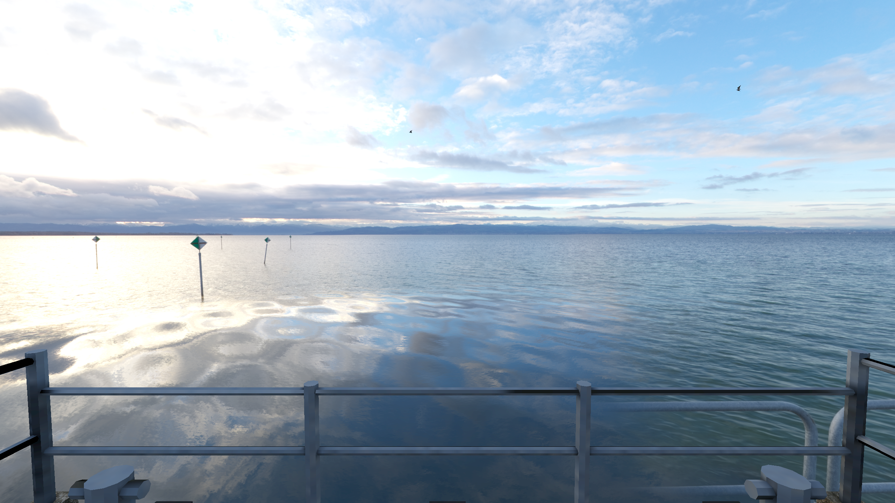
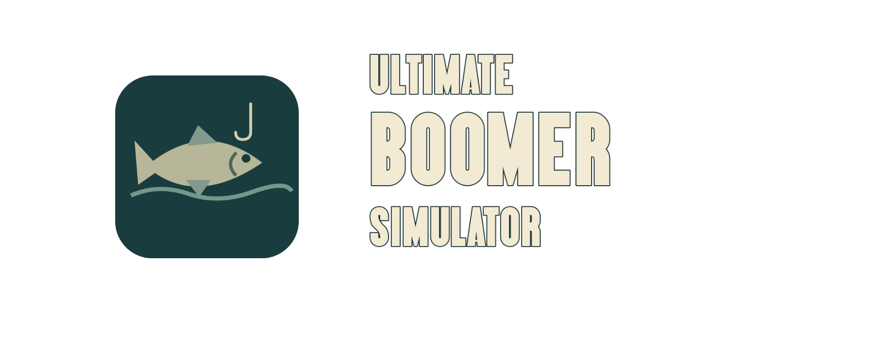
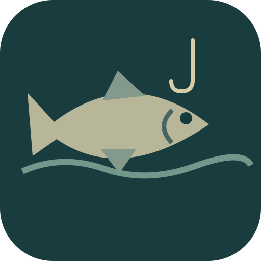
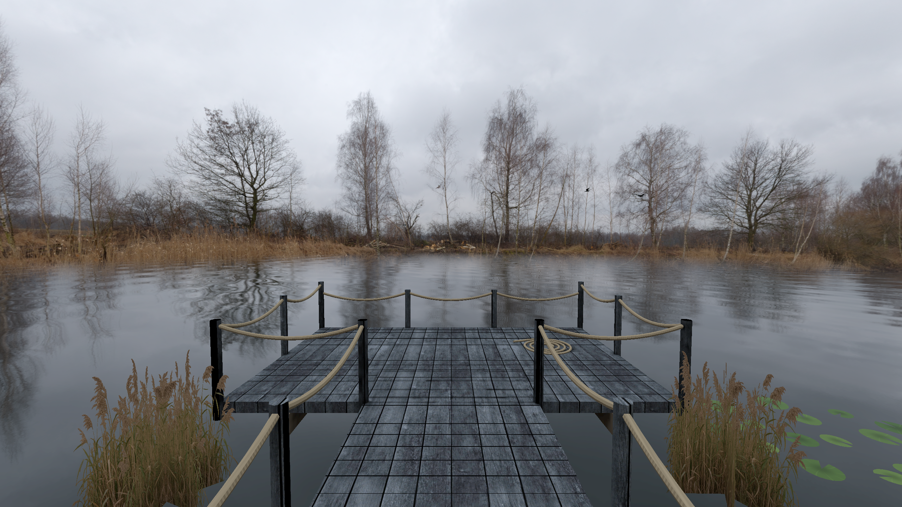
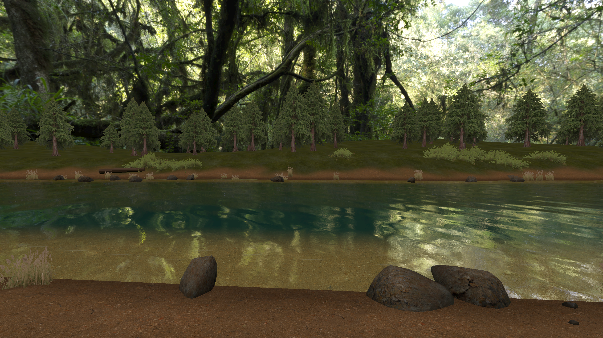
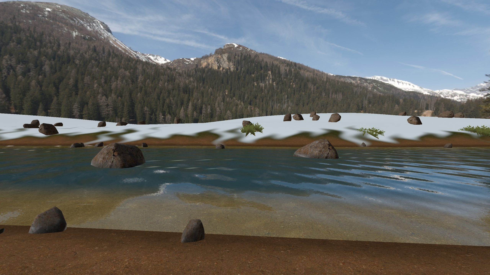
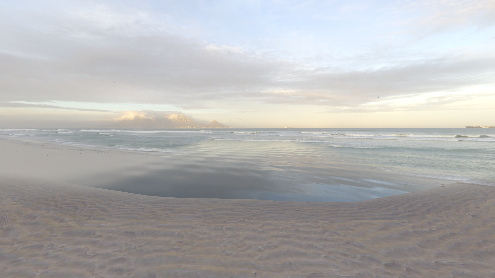
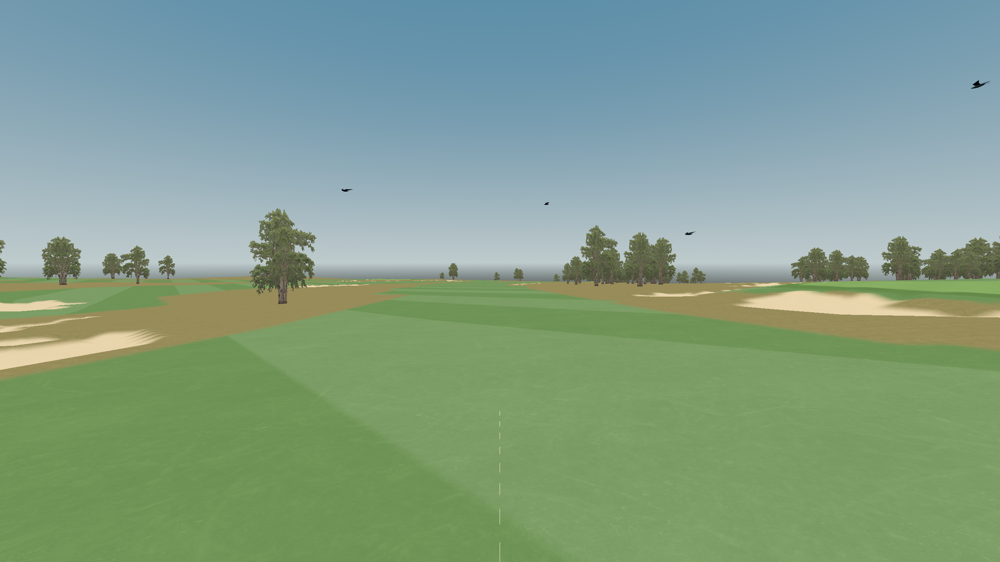
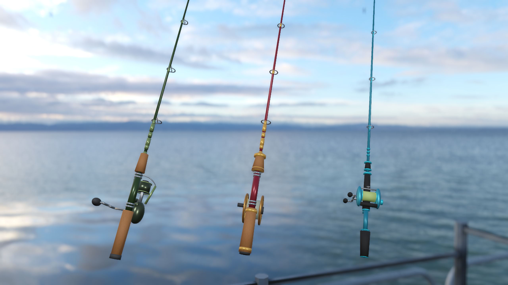
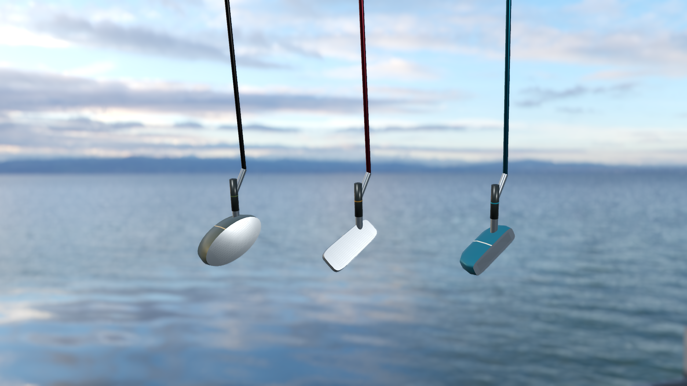

Ultimate Boomer Simulator
Fishing · Golf · Waterside BBQCast a line, play a round, and fire up the grill. Ultimate Boomer Simulator brings fishing, golf, and waterside BBQs together in VR. Explore freshwater and coastal settings, build your tackle collection, and make time for one more catch.
About this game
Your weekend plans just got simpler: fish, golf, grill, repeat.
Find your spot by a lake, river, or coast. Choose your tackle, cast with tracked controllers, and work the reel as fish run and your line comes under tension. Try fly fishing, record your catches, and spend earned in-game rewards on new tackle.
Swap the rod for a club and head onto the golf course. Read the lie, line up your shot, and swing your way toward the cup. Your selected tackle gives your clubs a matching cosmetic style.
Take a break at the waterside BBQ: turn the food, share a serving, and enjoy the view. Play solo or join friends on a player-hosted session or dedicated server.
Free to play, with no real-money purchases. Multiplayer requires a reachable host or server; automatic matchmaking is not included.
Find your spot
A quiet tour of the game’s waterside environments. Captured in the desktop game engine; Quest visuals may differ.


Reed-lined lake


Woodland stream


Alpine river


Dawn coast


A round of golf
Your weekend kit


Spinning, fly and lure tackle


Matching golf clubs
Equipment showcases use the game’s models with staged lighting and blurred backgrounds.